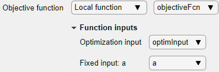
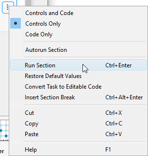
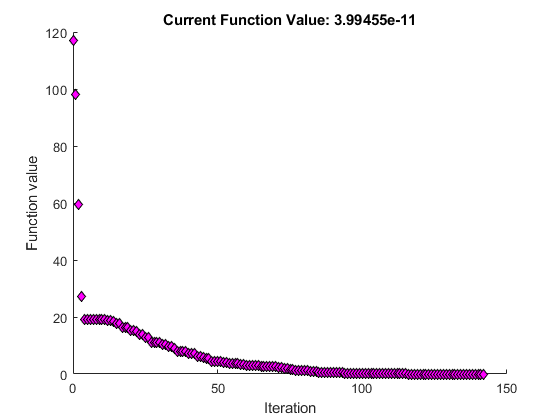
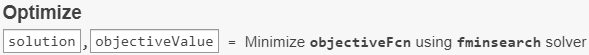
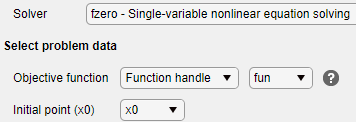
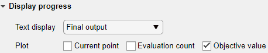
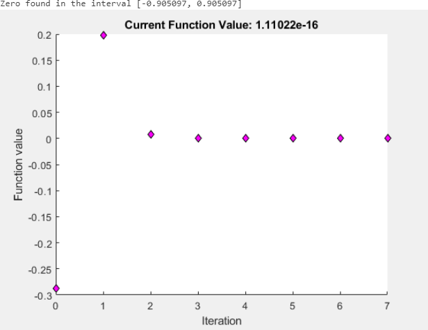

Optimize Live Editor Task
What Is the Optimize Live Editor Task?
The Optimize Live Editor task provides a visual interface for the
fminbnd, fminsearch, fzero, and lsqnonneg solvers. To start the
task, click the New Live Script button. Then click the
Insert tab and select Task >
Optimize.

Minimize a Nonlinear Function of Several Variables
This example shows how to minimize the function where the variable a = π using the Optimize Live Editor task.
For a video describing a similar optimization problem, see How to Use the Optimize Live Editor Task.
On the Home tab, in the File section, click the New Live Script button.
Insert an Optimize Live Editor task. Click the Insert tab and then, in the Code section, select Task > Optimize.

For use in entering problem data, click the Section Break button. New sections appear above and below the task.
In the section above the Optimize task, enter the following code.
a = pi; x0 = [-1 2];
To place these variables into the workspace, press Ctrl + Enter.
In the Specify problem type section of the task, click the Objective > Nonlinear button and the Constraints > Unconstrained button. The task shows that the recommended solver is
fminsearch.Note
If you have Optimization Toolbox™, your recommended solver at this point is different. Choose
fminsearchto proceed with the example.In the Select problem data section, select Objective function > Local function and then click the New button. A function script appears in a new section below the task. Edit the resulting code to contain the following uncommented lines.
function f = objectiveFcn(optimInput,a) x = optimInput(1); y = optimInput(2); f = 100*(y - x^2)^2 + (a - x)^2; end
In the Select problem data section, select
objectiveFcnas the local function.In the Select problem data section, under Function inputs, select Optimization input > optimInput and Fixed input: a > a.

Select Initial point (x0) > x0.
In the Display progress section, select Objective value for the plot.
To run the solver, click the options button ⁝ at the top right of the task window, and select Run Section.

The following plot appears.

To view the solution point, look at the top of the Optimize task.

The
solutionandobjectiveValuevariables are returned to the workspace. To view their values, insert a section break below the task and enter this code.disp(solution) disp(objectiveValue)
Run the section by pressing Ctrl+Enter.
disp(solution)
3.1416 9.8696
disp(objectiveValue)
3.9946e-11
Solve a Scalar Equation
This example shows how to use the Optimize Live Editor task to find the point x where cos(x) = x.
On the Home tab, in the File section, click the New Live Script button. Enter these lines of code in the live script.
fun = @(x)cos(x) - x; x0 = 0;
The first line defines the anonymous function
fun, which takes the value 0 at the point x where cos(x) = x. The second line defines the initial pointx0= 0, wherefzerobegins its search for a solution.Put these variables in the MATLAB® workspace by pressing Ctrl+Enter.
Insert an Optimize Live Editor task. Click the Insert tab and then, in the Code section, select Task > Optimize.
In the Specify problem type section of the task, select Solver > fzero.
In the Select problem data section, select Objective function > Function handle and then select
fun. Select Initial point (x0) > x0.
In the Display progress section, select Objective value for the plot.

Run the solver by pressing Ctrl+Enter.

To see the solution value, insert a new section below the task by clicking the Section Break button on the Insert tab. In the new section, enter
solutionand press Ctrl+Enter.solution
solution = 0.7391
See Also
Optimize | fzero | fminsearch